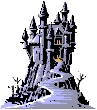

Bookmarks
LessWrong Users
Thomas Kwa,
gwern,
Vladimir Nesov,
Zvi,
Wei Dai
Fiction About AI
A Certain Kind of Chronology of ASI
Sites for Keeping Track of AI
LessWrong,
METR,
Epoch AI,
Manifold,
S&P 500
Other Important AI Pages
My Online Presense
Random Sites
Smart People